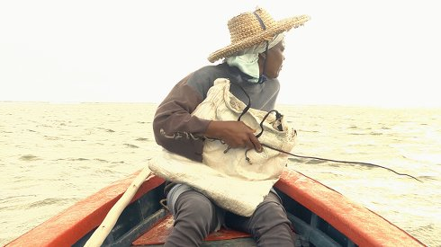

{kind=link}
Sec Rouge

Kate Tessa Lee & Tom Schön
|
27 min – HD – Creol B+S+P+V: Kate Tessa Lee, Tom Schön – K: Kate Tessa Lee – T: Tom Schön – With Marie Louise Edouard, Marie Jeanne Azie, Marie Elydione Azie
|
Tuesday 16 oct 8.30 pm werkstattkino
For generations of fisherwomen from Rodrigues Island, the traditional art of octopus spearing was a warrant of self-sufficiency, emancipation and social prestige. Today, it is a dying métier, emblematic of the unstable, expansive drift of our times. SEC ROUGE is an evocative filmic immersion into that fragile reality.
Kate Tessa Lee is a visual artist and filmmaker, born in 1982 in Curepipe, Mauritius, and currently based in Berlin, Germany. After studying glass at the Rhode Island School of Design, USA, she began developing a series of short-length art videos synthesizing performance, fictional biography and film-making. Lee's current filmic works are closer to a form of observation where reality and fiction merge. Since 2015, she has been collaborating with filmmaker Tom Schön. Tom Schön filmmaker, cineast, and professional sound recordist, based in Berlin, Germany. Born 1969, in Speyer, Germany. Fine arts, experimental film graduate from the University of Fine Arts Braunschweig, Germany, in 2009, under the professorship of Birgit Hein. Conceptor of several short and medium length films at the crossroad of experimental, documentary and essay film. Co-founder and program director of Grande Filiale International Film Festival, in Speyer, since 2001. Filmmaking collaboration with Kate Tessa Lee since 2015.
|
| Films Kate Tessa Lee Voice Appendages 2012 – Glass Flesh Cement 2013 – Amputation 2014 – Sec Rouge 2018 Films Tom Schön I have a Question 2008 – August is in Summer 2009 – Gabi or Two Colors Yellow 2011 – Today for Instance 2013 – Sec Rouge 2018
|